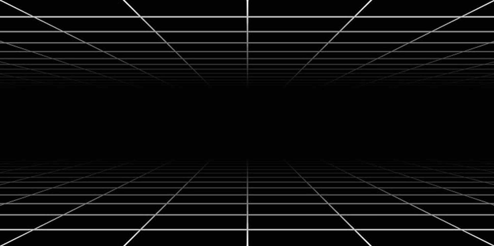
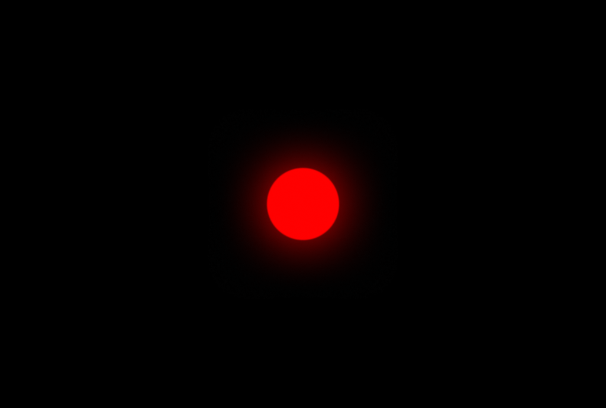

Build a visionOS app with RealityKit that places three glowing red, green, and blue spheres in an immersive space. Grab a sphere to move it, bring two spheres together to mix their colors, and pull a new mixed-color sphere from the overlap. Finally, rotate your right palm to adjust the brightness of the selected sphere.
Start by creating the immersive space where the RGB spheres will appear. The app starts in a regular SwiftUI window. When the user opens the immersive space, RealityKit presents the 3D environment where the spheres will be placed and interacted with.

In Xcode, choose File → New → Project…, select the
visionOS tab, and choose the App template under
Application.
Enter a product name. Set Initial Scene to Window, Immersive Space Renderer to RealityKit, and Immersive Space to Full.
Note: A Full Space gives the app access to ARKit features such as hand tracking when the required authorization is granted.
The AppModel keeps track of the immersive space's
current state. immersiveSpaceID identifies the immersive
space, while immersiveSpaceState tracks whether the space
is closed, in transition, or open.
The App structure defines both the regular window and
the immersive space. The WindowGroup displays the initial
SwiftUI interface; the ImmersiveSpace scene contains the
ImmersiveView. When the space appears the state becomes
open, and returns to closed
when it disappears.
openImmersiveSpace opens the space by identifier and
dismissImmersiveSpace closes it. The
inTransition state disables the button while the space is
opening or closing.
The regular window only needs a button to enter the immersive experience. At this point the app can open and close an empty immersive space — the RGB spheres come next.
Create the visual representation of each RGB light using RealityKit
entities, materials, and a radiating glow. Each sphere is a
ModelEntity with a spherical mesh, a colored material, and
an RGB color value.

SphereComponents.swiftThe RGBColorComponent stores the RGB color associated
with a sphere, keeping the color data attached to the entity itself.
RGBSphere.swiftA ModelEntity combines a mesh and a material into a visible object. makeRGBSphere creates a sphere with a radius of 0.15 meters and a luminous material.
Attach an RGBColorComponent so the sphere stores its own RGB color.
RGBColor.swiftThe RGBColor structure stores the red, green, and blue components separately: Red (1, 0, 0), Green (0, 1, 0), and Blue (0, 0, 1). Keeping these values separate makes it possible to combine colors later.
Add a computed property that converts the stored RGB values to a UIColor for use by the material.
The sphere uses a PhysicallyBasedMaterial with a colored, slightly transparent surface and emissive color to create a luminous appearance.
UnlitMaterial renders the glow without scene lighting affecting its appearance. Transparent blending lets the glow fade smoothly at the edges.
Use UIGraphicsImageRenderer to create the glow image in memory. Set the gradient to start with the sphere's color at the center and fade to transparent at the edge.
Create a CGGradient from the two colors, then draw it from the center of the image toward the edge to create a soft glow.
Convert the rendered image to a TextureResource so RealityKit can use it as the glow texture.
Create a flat plane that uses the glow material, then add it as a child of the sphere. Because the glow is attached to the sphere, it moves with the sphere.
Give the glow a name so you can find it later. Add a BillboardComponent so the flat glow always faces the viewer. The glow is visual only and does not receive input. Finally, call addRadiatingGlow from makeRGBSphere so every sphere gets a glow.
Create the three spheres in ImmersiveView's RealityView and add them to an AnchorEntity(.head). This gives the spheres a coordinate space relative to the user's head.
Position the spheres about 1.5 meters in front of the user. Place the red sphere above the center, with the green and blue spheres below it on the left and right.
Build and run. Verify that three glowing spheres appear in a triangular arrangement and remain fixed in place.
Keep the three RGB spheres fixed as originals and create movable clones when the user grabs them. Add the components and event handling needed to support these interactions.
The OriginalSphereComponent identifies an original
sphere and stores its fixed position — so the three original spheres remain in place
while movable copies are created for interaction.
SphereInteraction.swiftThe configureSphereForInteraction function adds an InputTargetComponent so the sphere can receive input and a CollisionComponent to define the area that can be targeted.
Add a ManipulationComponent so RealityKit can respond when the user pinches and drags the sphere. Setting releaseBehavior to .stay keeps the sphere at its new position when the gesture ends.
SphereInteractionManager.swiftSphereInteractionManager keeps track of the current interaction and the spheres created during manipulation. Start by defining the manager and an InteractionState enum to track what the user is currently manipulating.
Store the current interaction state, movable spheres, overlap targets, and selected sphere. Add selectSphere to keep track of the current selection.
Subscribe to the manipulation events used by the app: WillBegin, DidUpdateTransform, and WillRelease. Forward each event to its corresponding handler.
When WillBegin is received, select the manipulated sphere.
While the sphere moves, refresh the overlaps every frame. When the gesture ends, return to the idle state and refresh once more.
Connect SphereInteractionManager to ImmersiveView so it can receive manipulation events. Register the three original spheres, configure them for interaction, and subscribe the manager to the scene's manipulation events.
Because the original spheres stay fixed, createClone creates a separate sphere with the same color and glow. The clone receives its own interaction components so it can be moved independently.
When the grabbed entity has an OriginalSphereComponent, create a clone at the original's position. Add the clone to the movable sphere collection, store it in the interaction state, and select the clone so the user can continue the gesture with it.
SphericalSelectionRim.swiftCreate a custom white selection ring to show which sphere is selected. A BillboardComponent keeps the ring facing the viewer, and the ring is attached to only one sphere at a time.
Model the ring as a thin flat strip. For each segment of the circle, add one vertex on the outer edge and one on the inner edge.
Generate the inner and outer vertices, then create an index array that describes how the vertices connect to form triangles.
Connect each pair of neighboring segments with two triangles. Together, these triangles form the surface of the ring.
Pass the vertex positions, normals, and triangle indices to a MeshDescriptor. RealityKit uses the descriptor to create the MeshResource.
Display one selection ring at a time. When the selection changes, remove the ring from the previous sphere and attach it to the new selection.
Build and run. Verify that grabbing an original sphere creates a movable clone with a white selection ring, while the original sphere remains fixed.
Because the spheres represent light, their colors mix additively. When two spheres overlap, their red, green, and blue values are combined to produce a new color.
mixed(with:) adds the corresponding red, green, and blue channels from the two colors to calculate their combined light color.
RGB channel values range from 0.0 to 1.0. Adding two colors can push a channel above 1.0, so normalized() caps each channel at 1.0.
SphereOverlapSystem.swiftSphereOverlapSystem checks the movable spheres for overlapping pairs. It compares positions in world space so every sphere is measured in the same coordinate space. Start with the overlap distance and an array to store the results.
Check each unique pair of spheres once and measure the distance between their world-space positions. If the distance is greater than or equal to the overlap threshold, skip that pair.
For each overlapping pair, read both colors, calculate their mixed color, and create a SphereOverlap containing the midpoint and pair key. The pair key identifies the two spheres that produced the overlap, so the same overlap can be found again later.
SphereOverlap groups the information needed for one overlap: the two spheres, the midpoint, the mixed color, and the pair key.
Build and run. Move two clones until their volumes overlap. The app should detect the pair and calculate its mixed color, but no visible interaction target appears yet.
Two overlapping clones produce overlap data, but the overlap itself is not an entity the user can grab. This section creates an invisible interaction target at the midpoint so the user can grab the overlap and pull out a new mixed-color sphere.
OverlapVisualComponent.swiftOverlapVisualComponent stores the overlap key and mixed RGB color associated with a target. The key lets the manager match the target to the same pair of spheres later.
Create a mesh-free ModelEntity at the midpoint of the overlapping spheres. The target has no visible mesh, but configureSphereForInteraction gives it the input and collision components needed to make it grabbable, using a smaller collision radius to keep the interaction focused on the overlap.
Each time updateOverlaps() runs, recalculate the current overlaps from the spheres' positions. Remove targets for pairs that are no longer overlapping so the interaction state stays up to date.
For each current overlap, use its pair key to find an existing target. Reuse the target when the pair already exists; otherwise, create one. Update its position to the overlap midpoint.
Create createMixedSphere(from:) to create a new sphere using the overlap's mixed color and position.
When the user grabs an overlap target, find its corresponding overlap, create the mixed sphere, and select it so it can follow the gesture.
While the target is being manipulated, keep the mixed sphere at the target's position. When the gesture ends, remove the target and leave the mixed sphere in the scene.
Build and run. Grab the midpoint of two overlapping clones to pull out a new mixed-color sphere. Move the source spheres apart and verify that the corresponding overlap target disappears.
Use ARKit hand tracking to adjust the selected sphere's brightness. With all five fingers extended, rotate your right palm from facing down to facing up to brighten the sphere, then rotate it back down to dim it. The sphere's size stays unchanged.
SphereLightComponent stores the intensity used to control each sphere's brightness. This app uses a range of 0.0...2.4, with 1.2 as the default.
Clamp the intensity to the allowed range and store it in SphereLightComponent. Map the intensity to a 0...1 value, then use that value to update the sphere's opacity and emissive intensity.
Rebuild the sphere's PhysicallyBasedMaterial with the updated base color, transparency, and emissive intensity, then assign it back to the sphere.
Find the glow by name and update its opacity using the same 0...1 value. This keeps the glow in sync with the sphere's brightness without changing its size. Initialize each new sphere with the default intensity.
RightHandLightDialController.swiftUse two closures to choose the sphere to control and apply the calculated intensity. Store smoothed values so small changes in hand tracking do not cause sudden changes in brightness.
Store the two closures in the initializer so the controller can choose a target sphere and apply an intensity without managing the sphere state itself.
Process only tracked right-hand anchors. Read the wrist orientation and convert it into a brightness value. Continue only when all five fingers are extended and a target sphere is available.
Smooth the brightness toward the latest hand-tracking value to reduce small changes between frames. Map the smoothed 0...1 value to the sphere's intensity range, then apply it to the target sphere.
A HandAnchor contains a hand skeleton with tracked joints such as the wrist and finger joints. Read the wrist joint and convert its transform to world space so the controller can use its position and orientation.
Use the wrist joint's local Y axis as the palm-facing direction. Compare it with the world up direction using a dot product. As the palm rotates from facing down to facing up, the resulting value moves from low to high.
A finger is considered extended when its fingertip is farther from the wrist than its middle joint. The dial responds only when all five fingers are extended.
HandTrackingManager.swiftARKitSession manages the ARKit session, while HandTrackingProvider supplies hand-tracking updates. HandTrackingManager manages both and passes the updates to the light controller.
Check whether hand tracking is supported, request the required authorization, and run the HandTrackingProvider in the ARKitSession. When hand tracking is no longer needed, call stop() to end the session.
Listen for anchor updates from the provider in an asynchronous task. Pass each tracked hand anchor to the light controller so it can update the sphere's brightness.
Return the sphere currently selected by the interaction manager. When no sphere is selected, use the movable sphere closest to the user's wrist.
Add two methods that connect the hand controller to the interaction manager: one returns the sphere to control, and the other applies the calculated intensity.
Create the HandTrackingManager and the RightHandLightDialController in ImmersiveView. When the controller asks which sphere to control, return the selected sphere when one exists. Otherwise, return the movable sphere closest to the wrist.
Send the calculated intensity through the interaction manager. Connect the controller, start hand tracking when the immersive view appears, and stop it when the view disappears.
When a mixed sphere is created, it copies the average intensity of the two source spheres. Changes to the source spheres do not affect the mixed sphere after it is created.
Build and run the app on Apple Vision Pro. Select a sphere and extend all five fingers on your right hand. Rotate your palm from facing down to facing up to brighten the sphere, then rotate it back down to dim it. The sphere and its glow should change brightness smoothly without changing size. Create a mixed sphere and verify that it starts with the average intensity of its two source spheres.
Three quick questions about what you built. Pick an answer, then check it.